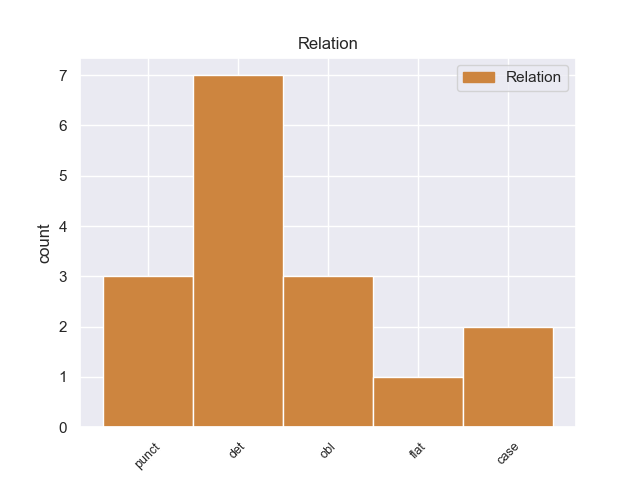
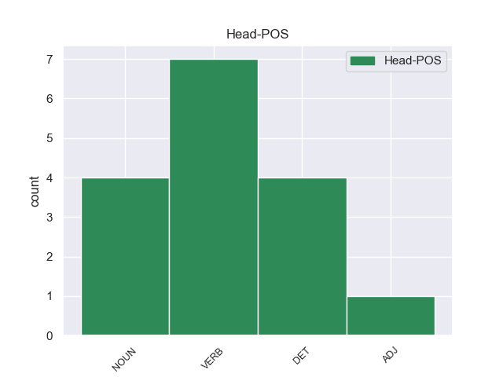
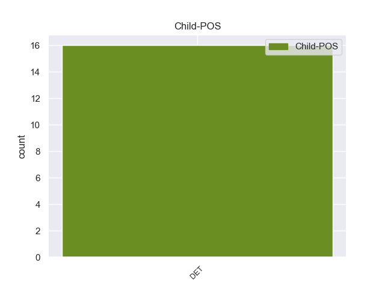

Distribution of features within this leaf



Agreement Rules sorted by frequency.
- When the dependent token is the determiner(det) of the head token, and the head token is VERB and the dependent token is DET.
1 Así _ _ _ _ 0 _ _ _
2 mismo _ _ _ _ 0 _ _ _
3 , _ _ _ _ 0 _ _ _
4 un _ _ _ _ 0 _ _ _
5 año _ _ _ _ 0 _ _ _
6 antes _ _ _ _ 0 _ _ _
7 , _ _ _ _ 0 _ _ _
8 en _ _ _ _ 0 _ _ _
9 2007 _ _ _ _ 0 _ _ _
10 el _ _ _ _ 0 _ _ _
11 bloque _ _ _ _ 0 _ _ _
12 de _ _ _ _ 0 _ _ _
13 viviendas _ _ _ _ 0 _ _ _
14 sociales _ _ _ _ 0 _ _ _
15 de _ _ _ _ 0 _ _ _
16 el _ _ _ _ 0 _ _ _
17 número _ _ _ _ 0 _ _ _
18 14A _ _ _ _ 0 _ _ _
19 de _ _ _ _ 0 _ _ _
20 la _ _ _ _ 0 _ _ _
21 avenida _ _ _ _ 0 _ _ _
22 Jesús _ _ _ _ 0 _ _ _
23 Galíndez _ _ _ _ 0 _ _ _
24 , _ _ _ _ 0 _ _ _
25 obra _ _ _ _ 0 _ _ _
26 de _ _ _ _ 0 _ _ _
27 los _ _ _ _ 0 _ _ _
28 arquitectos _ _ _ _ 0 _ _ _
29 Sandra _ _ _ _ 0 _ _ _
30 Gorostiza _ _ _ _ 0 _ _ _
31 y _ _ _ _ 0 _ _ _
32 David _ _ _ _ 0 _ _ _
33 Torres _ _ _ _ 0 _ _ _
34 , _ _ _ _ 0 _ _ _
35 fue fue DET _ Mood=Ind|Number=Sing|Person=3|Tense=Pres|VerbForm=Fin 36 det _ _
36 premiado premiado VERB _ Mood=Ind|Number=Sing|Person=3|Tense=Pres|VerbForm=Fin 0 _ _ _
37 por _ _ _ _ 0 _ _ _
38 el _ _ _ _ 0 _ _ _
39 Colegio _ _ _ _ 0 _ _ _
40 Oficial _ _ _ _ 0 _ _ _
41 de _ _ _ _ 0 _ _ _
42 Arquitectos _ _ _ _ 0 _ _ _
43 Vasco _ _ _ _ 0 _ _ _
44 Navarro _ _ _ _ 0 _ _ _
45 . _ _ _ _ 0 _ _ _
1 Inició _ _ _ _ 0 _ _ _
2 entonces _ _ _ _ 0 _ _ _
3 estudios _ _ _ _ 0 _ _ _
4 de _ _ _ _ 0 _ _ _
5 pintura _ _ _ _ 0 _ _ _
6 en _ _ _ _ 0 _ _ _
7 los _ _ _ _ 0 _ _ _
8 talleres _ _ _ _ 0 _ _ _
9 de _ _ _ _ 0 _ _ _
10 Antonio _ _ _ _ 0 _ _ _
11 Cabral _ _ _ _ 0 _ _ _
12 Bejarano _ _ _ _ 0 _ _ _
13 , _ _ _ _ 0 _ _ _
14 y _ _ _ _ 0 _ _ _
15 más _ _ _ _ 0 _ _ _
16 tarde _ _ _ _ 0 _ _ _
17 en _ _ _ _ 0 _ _ _
18 el _ _ _ _ 0 _ _ _
19 de _ _ _ _ 0 _ _ _
20 su _ _ _ _ 0 _ _ _
21 tío _ _ _ _ 0 _ _ _
22 paterno _ _ _ _ 0 _ _ _
23 Joaquín _ _ _ _ 0 _ _ _
24 Domínguez _ _ _ _ 0 _ _ _
25 Bécquer _ _ _ _ 0 _ _ _
26 , _ _ _ _ 0 _ _ _
27 que _ _ _ _ 0 _ _ _
28 le _ _ _ _ 0 _ _ _
29 pronosticó _ _ _ _ 0 _ _ _
30 « _ _ _ _ 0 _ _ _
31 Tú _ _ _ _ 0 _ _ _
32 no _ _ _ _ 0 _ _ _
33 serás _ _ _ _ 0 _ _ _
34 nunca _ _ _ _ 0 _ _ _
35 un _ _ _ _ 0 _ _ _
36 buen _ _ _ _ 0 _ _ _
37 pintor _ _ _ _ 0 _ _ _
38 , _ _ _ _ 0 _ _ _
39 sino _ _ _ _ 0 _ _ _
40 un _ _ _ _ 0 _ _ _
41 mal _ _ _ _ 0 _ _ _
42 literato _ _ _ _ 0 _ _ _
43 » _ _ _ _ 0 _ _ _
44 , _ _ _ _ 0 _ _ _
45 aunque _ _ _ _ 0 _ _ _
46 le _ _ _ _ 0 _ _ _
47 estimuló _ _ _ _ 0 _ _ _
48 a _ _ _ _ 0 _ _ _
49 los _ _ _ _ 0 _ _ _
50 estudios _ _ _ _ 0 _ _ _
51 y _ _ _ _ 0 _ _ _
52 le le DET _ Mood=Ind|Number=Sing|Person=3|Tense=Past|VerbForm=Fin 53 det _ _
53 pagó pagó NOUN _ Mood=Ind|Number=Sing|Person=3|Tense=Past|VerbForm=Fin 0 _ _ _
54 los _ _ _ _ 0 _ _ _
55 de _ _ _ _ 0 _ _ _
56 latín _ _ _ _ 0 _ _ _
57 . _ _ _ _ 0 _ _ _
1 Asimismo _ _ _ _ 0 _ _ _
2 , _ _ _ _ 0 _ _ _
3 el _ _ _ _ 0 _ _ _
4 gobierno _ _ _ _ 0 _ _ _
5 cubano _ _ _ _ 0 _ _ _
6 ha ha DET _ Mood=Ind|Number=Sing|Person=3|Tense=Pres|VerbForm=Fin 7 punct _ _
7 ratificado ratificado NOUN _ Mood=Ind|Number=Sing|Person=3|Tense=Pres|VerbForm=Fin 0 _ _ _
8 que _ _ _ _ 0 _ _ _
9 no _ _ _ _ 0 _ _ _
10 intentará _ _ _ _ 0 _ _ _
11 recuperar _ _ _ _ 0 _ _ _
12 sus _ _ _ _ 0 _ _ _
13 derechos _ _ _ _ 0 _ _ _
14 mediante _ _ _ _ 0 _ _ _
15 la _ _ _ _ 0 _ _ _
16 fuerza _ _ _ _ 0 _ _ _
17 . _ _ _ _ 0 _ _ _
1 En _ _ _ _ 0 _ _ _
2 enero _ _ _ _ 0 _ _ _
3 de _ _ _ _ 0 _ _ _
4 1971 _ _ _ _ 0 _ _ _
5 , _ _ _ _ 0 _ _ _
6 se _ _ _ _ 0 _ _ _
7 matriculó matriculó VERB _ Mood=Ind|Number=Sing|Person=3|Tense=Past|VerbForm=Fin 0 _ _ _
8 en _ _ _ _ 0 _ _ _
9 el _ _ _ _ 0 _ _ _
10 programa _ _ _ _ 0 _ _ _
11 de _ _ _ _ 0 _ _ _
12 doctorado _ _ _ _ 0 _ _ _
13 en _ _ _ _ 0 _ _ _
14 la _ _ _ _ 0 _ _ _
15 Universidad _ _ _ _ 0 _ _ _
16 de _ _ _ _ 0 _ _ _
17 Texas _ _ _ _ 0 _ _ _
18 , _ _ _ _ 0 _ _ _
19 y _ _ _ _ 0 _ _ _
20 Robert _ _ _ _ 0 _ _ _
21 Simmons _ _ _ _ 0 _ _ _
22 fue _ _ _ _ 0 _ _ _
23 asignado asignado DET _ Mood=Ind|Number=Sing|Person=3|Tense=Past|VerbForm=Fin 7 obl _ _
24 como _ _ _ _ 0 _ _ _
25 su _ _ _ _ 0 _ _ _
26 asesor _ _ _ _ 0 _ _ _
27 . _ _ _ _ 0 _ _ _
1 En _ _ _ _ 0 _ _ _
2 enero _ _ _ _ 0 _ _ _
3 de _ _ _ _ 0 _ _ _
4 1971 _ _ _ _ 0 _ _ _
5 , _ _ _ _ 0 _ _ _
6 se _ _ _ _ 0 _ _ _
7 matriculó _ _ _ _ 0 _ _ _
8 en _ _ _ _ 0 _ _ _
9 el _ _ _ _ 0 _ _ _
10 programa _ _ _ _ 0 _ _ _
11 de _ _ _ _ 0 _ _ _
12 doctorado _ _ _ _ 0 _ _ _
13 en _ _ _ _ 0 _ _ _
14 la _ _ _ _ 0 _ _ _
15 Universidad _ _ _ _ 0 _ _ _
16 de _ _ _ _ 0 _ _ _
17 Texas _ _ _ _ 0 _ _ _
18 , _ _ _ _ 0 _ _ _
19 y _ _ _ _ 0 _ _ _
20 Robert _ _ _ _ 0 _ _ _
21 Simmons _ _ _ _ 0 _ _ _
22 fue _ _ _ _ 0 _ _ _
23 asignado asignado DET _ Mood=Ind|Number=Sing|Person=3|Tense=Past|VerbForm=Fin 0 _ _ _
24 como _ _ _ _ 0 _ _ _
25 su _ _ _ _ 0 _ _ _
26 asesor asesor DET _ Mood=Ind|Number=Sing|Person=3|Tense=Past|VerbForm=Fin 23 obl _ _
27 . _ _ _ _ 0 _ _ _
1 Dos _ _ _ _ 0 _ _ _
2 años _ _ _ _ 0 _ _ _
3 después _ _ _ _ 0 _ _ _
4 , _ _ _ _ 0 _ _ _
5 el _ _ _ _ 0 _ _ _
6 5 _ _ _ _ 0 _ _ _
7 de _ _ _ _ 0 _ _ _
8 septiembre _ _ _ _ 0 _ _ _
9 de _ _ _ _ 0 _ _ _
10 1818 _ _ _ _ 0 _ _ _
11 , _ _ _ _ 0 _ _ _
12 el _ _ _ _ 0 _ _ _
13 Rey _ _ _ _ 0 _ _ _
14 concedía _ _ _ _ 0 _ _ _
15 autorización _ _ _ _ 0 _ _ _
16 para _ _ _ _ 0 _ _ _
17 integrar _ _ _ _ 0 _ _ _
18 su _ _ _ _ 0 _ _ _
19 primer _ _ _ _ 0 _ _ _
20 Ayuntamiento _ _ _ _ 0 _ _ _
21 , _ _ _ _ 0 _ _ _
22 el _ _ _ _ 0 _ _ _
23 cual _ _ _ _ 0 _ _ _
24 fue _ _ _ _ 0 _ _ _
25 presidido _ _ _ _ 0 _ _ _
26 por _ _ _ _ 0 _ _ _
27 Tomás _ _ _ _ 0 _ _ _
28 Hondal _ _ _ _ 0 _ _ _
29 , _ _ _ _ 0 _ _ _
30 en _ _ _ _ 0 _ _ _
31 cuyo _ _ _ _ 0 _ _ _
32 honor _ _ _ _ 0 _ _ _
33 lleva _ _ _ _ 0 _ _ _
34 su _ _ _ _ 0 _ _ _
35 nombre _ _ _ _ 0 _ _ _
36 el _ _ _ _ 0 _ _ _
37 callejón callejón NOUN _ Mood=Ind|Number=Sing|Person=3|Tense=Past|VerbForm=Fin 0 _ _ _
38 situado _ _ _ _ 0 _ _ _
39 entre _ _ _ _ 0 _ _ _
40 las _ _ _ _ 0 _ _ _
41 calles _ _ _ _ 0 _ _ _
42 Morelos _ _ _ _ 0 _ _ _
43 y _ _ _ _ 0 _ _ _
44 Manuel _ _ _ _ 0 _ _ _
45 P. _ _ _ _ 0 _ _ _
46 Hernández _ _ _ _ 0 _ _ _
47 , _ _ _ _ 0 _ _ _
48 paralelo _ _ _ _ 0 _ _ _
49 y _ _ _ _ 0 _ _ _
50 a _ _ _ _ 0 _ _ _
51 el _ _ _ _ 0 _ _ _
52 oriente _ _ _ _ 0 _ _ _
53 de _ _ _ _ 0 _ _ _
54 la _ _ _ _ 0 _ _ _
55 calle _ _ _ _ 0 _ _ _
56 Llave llave DET _ Mood=Ind|Number=Sing|Person=3|Tense=Past|VerbForm=Fin 37 flat _ _
57 . _ _ _ _ 0 _ _ _
1 El _ _ _ _ 0 _ _ _
2 presidente _ _ _ _ 0 _ _ _
3 de _ _ _ _ 0 _ _ _
4 el _ _ _ _ 0 _ _ _
5 Gobierno _ _ _ _ 0 _ _ _
6 , _ _ _ _ 0 _ _ _
7 José _ _ _ _ 0 _ _ _
8 Luis _ _ _ _ 0 _ _ _
9 Rodríguez _ _ _ _ 0 _ _ _
10 Zapatero _ _ _ _ 0 _ _ _
11 , _ _ _ _ 0 _ _ _
12 ha ha DET _ Mood=Ind|Number=Sing|Person=3|Tense=Pres|VerbForm=Fin 41 det _ _
13 conversado _ _ _ _ 0 _ _ _
14 este _ _ _ _ 0 _ _ _
15 miércoles _ _ _ _ 0 _ _ _
16 brevemente _ _ _ _ 0 _ _ _
17 con _ _ _ _ 0 _ _ _
18 el _ _ _ _ 0 _ _ _
19 primer _ _ _ _ 0 _ _ _
20 ministro _ _ _ _ 0 _ _ _
21 italiano _ _ _ _ 0 _ _ _
22 , _ _ _ _ 0 _ _ _
23 Silvio _ _ _ _ 0 _ _ _
24 Berlusconi _ _ _ _ 0 _ _ _
25 , _ _ _ _ 0 _ _ _
26 minutos _ _ _ _ 0 _ _ _
27 antes _ _ _ _ 0 _ _ _
28 de _ _ _ _ 0 _ _ _
29 el _ _ _ _ 0 _ _ _
30 inicio _ _ _ _ 0 _ _ _
31 de _ _ _ _ 0 _ _ _
32 la _ _ _ _ 0 _ _ _
33 cumbre _ _ _ _ 0 _ _ _
34 de _ _ _ _ 0 _ _ _
35 líderes _ _ _ _ 0 _ _ _
36 europeos _ _ _ _ 0 _ _ _
37 en _ _ _ _ 0 _ _ _
38 la _ _ _ _ 0 _ _ _
39 que _ _ _ _ 0 _ _ _
40 se _ _ _ _ 0 _ _ _
41 debatirá debatirá ADJ _ Mood=Ind|Number=Sing|Person=3|Tense=Pres|VerbForm=Fin 0 _ _ _
42 un _ _ _ _ 0 _ _ _
43 plan _ _ _ _ 0 _ _ _
44 global _ _ _ _ 0 _ _ _
45 para _ _ _ _ 0 _ _ _
46 combatir _ _ _ _ 0 _ _ _
47 la _ _ _ _ 0 _ _ _
48 crisis _ _ _ _ 0 _ _ _
49 de _ _ _ _ 0 _ _ _
50 deuda _ _ _ _ 0 _ _ _
51 de _ _ _ _ 0 _ _ _
52 la _ _ _ _ 0 _ _ _
53 eurozona _ _ _ _ 0 _ _ _
54 . _ _ _ _ 0 _ _ _
1 Javier _ _ _ _ 0 _ _ _
2 Riba _ _ _ _ 0 _ _ _
3 ha ha DET _ Mood=Ind|Number=Sing|Person=3|Tense=Pres|VerbForm=Fin 5 det _ _
4 sido _ _ _ _ 0 _ _ _
5 premiado premiado DET _ Mood=Ind|Number=Sing|Person=3|Tense=Pres|VerbForm=Fin 0 _ _ _
6 en _ _ _ _ 0 _ _ _
7 diferentes _ _ _ _ 0 _ _ _
8 Concursos _ _ _ _ 0 _ _ _
9 Internacionales _ _ _ _ 0 _ _ _
10 : _ _ _ _ 0 _ _ _
1 Divide _ _ _ _ 0 _ _ _
2 a _ _ _ _ 0 _ _ _
3 el _ _ _ _ 0 _ _ _
4 taxón _ _ _ _ 0 _ _ _
5 en _ _ _ _ 0 _ _ _
6 dos _ _ _ _ 0 _ _ _
7 extensas _ _ _ _ 0 _ _ _
8 clases _ _ _ _ 0 _ _ _
9 : _ _ _ _ 0 _ _ _
10 Liliopsida _ _ _ _ 0 _ _ _
11 ( _ _ _ _ 0 _ _ _
12 cuya _ _ _ _ 0 _ _ _
13 circunscripción circunscripción DET _ Mood=Ind|Number=Sing|Person=3|Tense=Past|VerbForm=Fin 26 case _ _
14 coincide _ _ _ _ 0 _ _ _
15 con _ _ _ _ 0 _ _ _
16 lo _ _ _ _ 0 _ _ _
17 que _ _ _ _ 0 _ _ _
18 conocemos _ _ _ _ 0 _ _ _
19 como _ _ _ _ 0 _ _ _
20 monocotiledóneas _ _ _ _ 0 _ _ _
21 ) _ _ _ _ 0 _ _ _
22 y _ _ _ _ 0 _ _ _
23 Magnoliopsida _ _ _ _ 0 _ _ _
24 ( _ _ _ _ 0 _ _ _
25 cuya _ _ _ _ 0 _ _ _
26 circunscripción circunscripción DET _ Mood=Ind|Number=Sing|Person=3|Tense=Past|VerbForm=Fin 0 _ _ _
27 coincide _ _ _ _ 0 _ _ _
28 con _ _ _ _ 0 _ _ _
29 lo _ _ _ _ 0 _ _ _
30 que _ _ _ _ 0 _ _ _
31 conocemos _ _ _ _ 0 _ _ _
32 como _ _ _ _ 0 _ _ _
33 dicotiledóneas _ _ _ _ 0 _ _ _
34 ) _ _ _ _ 0 _ _ _
35 . _ _ _ _ 0 _ _ _
1 Las _ _ _ _ 0 _ _ _
2 semillas _ _ _ _ 0 _ _ _
3 tienen _ _ _ _ 0 _ _ _
4 7-9 _ _ _ _ 0 _ _ _
5 mm _ _ _ _ 0 _ _ _
6 de _ _ _ _ 0 _ _ _
7 largo _ _ _ _ 0 _ _ _
8 con _ _ _ _ 0 _ _ _
9 una _ _ _ _ 0 _ _ _
10 cuña _ _ _ _ 0 _ _ _
11 en _ _ _ _ 0 _ _ _
12 forma _ _ _ _ 0 _ _ _
13 de _ _ _ _ 0 _ _ _
14 ala _ _ _ _ 0 _ _ _
15 de _ _ _ _ 0 _ _ _
16 1,5 _ _ _ _ 0 _ _ _
17 cm _ _ _ _ 0 _ _ _
18 de _ _ _ _ 0 _ _ _
19 largo _ _ _ _ 0 _ _ _
20 y _ _ _ _ 0 _ _ _
21 son _ _ _ _ 0 _ _ _
22 liberadas liberada VERB _ Mood=Ind|Number=Sing|Person=3|Tense=Past|VerbForm=Fin 0 _ _ _
23 después _ _ _ _ 0 _ _ _
24 de _ _ _ _ 0 _ _ _
25 que _ _ _ _ 0 _ _ _
26 los _ _ _ _ 0 _ _ _
27 conos conos DET _ Mood=Ind|Number=Sing|Person=3|Tense=Past|VerbForm=Fin 22 case _ _
28 se _ _ _ _ 0 _ _ _
29 desintegren _ _ _ _ 0 _ _ _
30 en _ _ _ _ 0 _ _ _
31 su _ _ _ _ 0 _ _ _
32 maduración _ _ _ _ 0 _ _ _
33 en _ _ _ _ 0 _ _ _
34 octubre _ _ _ _ 0 _ _ _
35 . _ _ _ _ 0 _ _ _
1 Ricardo _ _ _ _ 0 _ _ _
2 Durand _ _ _ _ 0 _ _ _
3 Flórez _ _ _ _ 0 _ _ _
4 ( _ _ _ _ 0 _ _ _
5 Obispo _ _ _ _ 0 _ _ _
6 de _ _ _ _ 0 _ _ _
7 el _ _ _ _ 0 _ _ _
8 Callao _ _ _ _ 0 _ _ _
9 ) _ _ _ _ 0 _ _ _
10 , _ _ _ _ 0 _ _ _
11 Jose _ _ _ _ 0 _ _ _
12 María _ _ _ _ 0 _ _ _
13 Guallart _ _ _ _ 0 _ _ _
14 ( _ _ _ _ 0 _ _ _
15 Misionero _ _ _ _ 0 _ _ _
16 entre _ _ _ _ 0 _ _ _
17 los _ _ _ _ 0 _ _ _
18 Aguarunas _ _ _ _ 0 _ _ _
19 y _ _ _ _ 0 _ _ _
20 Huambisas _ _ _ _ 0 _ _ _
21 , _ _ _ _ 0 _ _ _
22 escritor _ _ _ _ 0 _ _ _
23 ) _ _ _ _ 0 _ _ _
24 , _ _ _ _ 0 _ _ _
25 Vicente _ _ _ _ 0 _ _ _
26 Santuc _ _ _ _ 0 _ _ _
27 ( _ _ _ _ 0 _ _ _
28 Filosofo filosofo DET _ Mood=Ind|Number=Sing|Person=3|Tense=Pres|VerbForm=Fin 0 _ _ _
29 , , DET _ Mood=Ind|Number=Sing|Person=3|Tense=Pres|VerbForm=Fin 28 punct _ _
30 primer _ _ _ _ 0 _ _ _
31 Rector _ _ _ _ 0 _ _ _
32 de _ _ _ _ 0 _ _ _
33 la _ _ _ _ 0 _ _ _
34 Universidad _ _ _ _ 0 _ _ _
35 Antonio _ _ _ _ 0 _ _ _
36 Ruiz _ _ _ _ 0 _ _ _
37 de _ _ _ _ 0 _ _ _
38 Montoya _ _ _ _ 0 _ _ _
39 ) _ _ _ _ 0 _ _ _
40 . _ _ _ _ 0 _ _ _
Disagree Examples:
1 Lissón _ _ _ _ 0 _ _ _
2 pudo _ _ _ _ 0 _ _ _
3 declarar _ _ _ _ 0 _ _ _
4 con _ _ _ _ 0 _ _ _
5 toda _ _ _ _ 0 _ _ _
6 verdad _ _ _ _ 0 _ _ _
7 : _ _ _ _ 0 _ _ _
8 " _ _ _ _ 0 _ _ _
9 no _ _ _ _ 0 _ _ _
10 debo _ _ _ _ 0 _ _ _
11 nada _ _ _ _ 0 _ _ _
12 a _ _ _ _ 0 _ _ _
13 el _ _ _ _ 0 _ _ _
14 arzobispado _ _ _ _ 0 _ _ _
15 de _ _ _ _ 0 _ _ _
16 Lima _ _ _ _ 0 _ _ _
17 ni _ _ _ _ 0 _ _ _
18 a _ _ _ _ 0 _ _ _
19 sus _ _ _ _ 0 _ _ _
20 instituciones _ _ _ _ 0 _ _ _
21 , _ _ _ _ 0 _ _ _
22 pues _ _ _ _ 0 _ _ _
23 jamás _ _ _ _ 0 _ _ _
24 he he DET _ Mood=Ind|Number=Sing|Person=3|Tense=Pres|VerbForm=Fin 25 obl _ _
25 dispuesto dispuesto VERB _ Mood=Ind|Number=Sing|Person=3|Tense=Past|VerbForm=Fin 0 _ _ _
26 de _ _ _ _ 0 _ _ _
27 ninguno _ _ _ _ 0 _ _ _
28 de _ _ _ _ 0 _ _ _
29 sus _ _ _ _ 0 _ _ _
30 bienes _ _ _ _ 0 _ _ _
31 para _ _ _ _ 0 _ _ _
32 mi _ _ _ _ 0 _ _ _
33 beneficio _ _ _ _ 0 _ _ _
34 personal _ _ _ _ 0 _ _ _
35 o _ _ _ _ 0 _ _ _
36 el _ _ _ _ 0 _ _ _
37 de _ _ _ _ 0 _ _ _
38 mi _ _ _ _ 0 _ _ _
39 familia _ _ _ _ 0 _ _ _
40 " _ _ _ _ 0 _ _ _
41 . _ _ _ _ 0 _ _ _
1 Cansado _ _ _ _ 0 _ _ _
2 de _ _ _ _ 0 _ _ _
3 el _ _ _ _ 0 _ _ _
4 encasillamiento _ _ _ _ 0 _ _ _
5 que _ _ _ _ 0 _ _ _
6 le _ _ _ _ 0 _ _ _
7 produce _ _ _ _ 0 _ _ _
8 el _ _ _ _ 0 _ _ _
9 éxito _ _ _ _ 0 _ _ _
10 de _ _ _ _ 0 _ _ _
11 el _ _ _ _ 0 _ _ _
12 ' _ _ _ _ 0 _ _ _
13 Romancero _ _ _ _ 0 _ _ _
14 gitano _ _ _ _ 0 _ _ _
15 ' _ _ _ _ 0 _ _ _
16 y _ _ _ _ 0 _ _ _
17 de _ _ _ _ 0 _ _ _
18 ver _ _ _ _ 0 _ _ _
19 se _ _ _ _ 0 _ _ _
20 vinculado _ _ _ _ 0 _ _ _
21 a _ _ _ _ 0 _ _ _
22 " _ _ _ _ 0 _ _ _
23 un _ _ _ _ 0 _ _ _
24 tono _ _ _ _ 0 _ _ _
25 de _ _ _ _ 0 _ _ _
26 costumbrismo _ _ _ _ 0 _ _ _
27 e _ _ _ _ 0 _ _ _
28 incultura _ _ _ _ 0 _ _ _
29 " _ _ _ _ 0 _ _ _
30 que _ _ _ _ 0 _ _ _
31 siempre _ _ _ _ 0 _ _ _
32 trató _ _ _ _ 0 _ _ _
33 de _ _ _ _ 0 _ _ _
34 evitar _ _ _ _ 0 _ _ _
35 , _ _ _ _ 0 _ _ _
36 en _ _ _ _ 0 _ _ _
37 1929 _ _ _ _ 0 _ _ _
38 su _ _ _ _ 0 _ _ _
39 antiguo _ _ _ _ 0 _ _ _
40 profesor _ _ _ _ 0 _ _ _
41 Fernando _ _ _ _ 0 _ _ _
42 de _ _ _ _ 0 _ _ _
43 los _ _ _ _ 0 _ _ _
44 Ríos _ _ _ _ 0 _ _ _
45 le _ _ _ _ 0 _ _ _
46 ofrece ofrece VERB _ Mood=Ind|Number=Sing|Person=3|Tense=Pres|VerbForm=Fin 0 _ _ _
47 la _ _ _ _ 0 _ _ _
48 oportunidad _ _ _ _ 0 _ _ _
49 de _ _ _ _ 0 _ _ _
50 acompañar _ _ _ _ 0 _ _ _
51 le le DET _ Mood=Ind|Number=Sing|Person=3|Tense=Past|VerbForm=Fin 46 punct _ _
52 a _ _ _ _ 0 _ _ _
53 Nueva _ _ _ _ 0 _ _ _
54 York _ _ _ _ 0 _ _ _
55 . _ _ _ _ 0 _ _ _